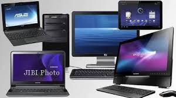

Sejarah Komputer
Komputer adalah sebuah alat yang digunakan untuk mengolah data berdasarkan perintah yang terstruktur. Secara luas komputer dapat di artikan sebagai peralatan elektronik yang terdiri dari banyak komponen yang saling bekerja sama antar satu komponen dengan yang lainnya, untuk menghasilkan informasi dan program serta applikasi berdasarkan data yang ada.
- Komputer Generasi I

Electronic Numerical Integrator and Computer (ENIAC) Komputer ini dirancang oleh
John Presper Eckert (1919-1995) dan John W. Mauchly (1907-1980) yang dibuat atas kerja sama antara
pemerintah Amerika Serikat dan University of Pennsylvania. Terdiri dari 18.000 tabung vakum, 70.000
resistor, dan 5 juta titik solder, komputer tersebut merupakan mesin yang sangat besar dan
mengonsumsi daya sebesar 160 kW.
Electronic Discrete Variable Automatic Computer (EDVAC) John von Neumann
(1903-1957) bergabung dengan tim University of Pennsylvania dalam usaha membangun konsep desain
komputer yang hingga 40 tahun mendatang masih dipakai dalam teknik komputer. Von Neumann mendesain
EDVAC pada tahun 1945 dengan sebuah memori untuk menampung baik program ataupun data. Teknik ini
memungkinkan komputer untuk berhenti pada suatu saat dan kemudian melanjutkan pekerjaannya kembali.
Kunci utama arsitektur von Neumann adalah unit pemrosesan sentral (CPU), yang memungkinkan seluruh
fungsi komputer untuk dikoordinasikan melalui satu sumber tunggal. Tahun 1951, UNIVAC I (Universal
Automatic Computer I) yang dibuat oleh Remington Rand, menjadi komputer komersial pertama yang
memanfaatkan model arsitektur Von Neumann tersebut.
Komputer Generasi pertama dikarakteristik dengan fakta bahwa instruksi operasi dibuat secara
spesifik untuk suatu tugas tertentu. Setiap komputer memiliki program kode biner yang berbeda
yang disebut "bahasa mesin" (machine language). Hal ini menyebabkan komputer sulit untuk
diprogram dan membatasi kecepatannya. Ciri lain komputer generasi pertama adalah penggunaan tube
vakum (yang membuat komputer pada masa tersebut berukuran sangat besar) dan silinder magnetik
untuk penyimpanan data
- Komputer Generasi II
Pada tahun 1948, penemuan transistor sangat memengaruhi perkembangan komputer. Transistor
menggantikan tube vakum di televisi, radio, dan komputer. Akibatnya, ukuran mesin-mesin elektrik
berkurang drastis.
Superkomputer Stretch & LARC Komputer-komputer ini, yang dikembangkan untuk
laboratorium energi atom, dapat menangani sejumlah besar data, sebuah kemampuan yang sangat
dibutuhkan oleh peneliti atom. Mesin tersebut sangat mahal dan cenderung terlalu kompleks untuk
kebutuhan komputasi bisnis, sehingga membatasi kepopulerannya. Komputer generasi kedua menggantikan
bahasa mesin dengan bahasa assembly. Bahasa assembly adalah bahasa yang menggunakan
singkatan-singakatan untuk menggantikan kode biner.
Komputer-komputer generasi kedua ini
merupakan komputer yang sepenuhnya menggunakan transistor. Mereka juga memiliki komponen-komponen
yang dapat diasosiasikan dengan komputer pada saat ini: printer, penyimpanan dalam disket, memory,
sistem operasi, dan program.
Beberapa bahasa pemrograman mulai bermunculan pada saat itu. Bahasa
pemrograman Common Business-Oriented Language (COBOL) dan Formula Translator (FORTRAN) mulai umum
digunakan. Bahasa pemrograman ini menggantikan kode mesin yang rumit dengan kata-kata, kalimat, dan
formula matematika yang lebih mudah dipahami oleh manusia. Hal ini memudahkan seseorang untuk
memprogram dan mengatur komputer.
- Komputer Generasi III
Jack Kilby, seorang insinyur di Texas Instrument, mengembangkan sirkuit terintegrasi (IC: integrated circuit) pada tahun 1958. IC mengkombinasikan tiga komponen elektronik dalam sebuah piringan silikon kecil yang terbuat dari pasir kuarsa. Pada ilmuwan kemudian berhasil memasukkan lebih banyak komponen-komponen ke dalam suatu chip tunggal yang disebut semikonduktor. Hasilnya, komputer menjadi semakin kecil karena komponen-komponen dapat dipadatkan dalam chip. Kemajuan komputer generasi ketiga lainnya adalah penggunaan sistem operasi (operating system) yang memungkinkan mesin untuk menjalankan berbagai program yang berbeda secara serentak dengan sebuah program utama yang memonitor dan mengkoordinasi memori komputer.
- Komputer Generasi IV
Setelah IC, tujuan pengembangan menjadi lebih jelas: mengecilkan ukuran sirkuit dan komponen-komponen
elektrik. Large Scale Integration (LSI) dapat memuat ratusan komponen dalam sebuah
chip. Pada tahun 1980-an, Very Large Scale Integration (VLSI) memuat ribuan
komponen dalam sebuah chip tunggal.
Ultra-Large Scale Integration (ULSI)
meningkatkan jumlah tersebut menjadi jutaan. Kemampuan untuk memasang sedemikian banyak komponen
dalam suatu keping yang berukurang setengah keping uang logam mendorong turunnya harga dan ukuran
komputer. Hal tersebut juga meningkatkan daya kerja, efisiensi dan keterandalan komputer.
Pada
tahun 1981, IBM memperkenalkan penggunaan Personal Computer (PC) untuk penggunaan di rumah, kantor,
dan sekolah.
Seiring dengan menjamurnya penggunaan komputer di tempat kerja, cara-cara
baru untuk menggali potensial terus dikembangkan. Seiring dengan bertambah kuatnya suatu komputer
kecil, komputer-komputer tersebut dapat dihubungkan secara bersamaan dalam suatu jaringan untuk
saling berbagi memori, peranti lunak, informasi, dan juga untuk dapat saling berkomunikasi satu
dengan yang lainnya.
- Komputer Generasi V

Banyak kemajuan di bidang desain komputer dan teknologi yang semakin memungkinkan pembuatan komputer
generasi kelima. Dua kemajuan rekayasa yang terutama adalah kemampuan pemrosesan paralel, yang akan
menggantikan model non Neumann. Model non Neumann akan digantikan dengan sistem yang mampu
mengkoordinasikan banyak CPU untuk bekerja secara serempak. Kemajuan lain adalah teknologi
superkonduktor yang memungkinkan aliran elektrik tanpa ada hambatan apapun, yang nantinya dapat
mempercepat kecepatan informasi.
Jepang adalah negara yang terkenal dalam sosialisasi jargon dan proyek komputer generasi kelima.
Lembaga ICOT (Institute for new Computer Technology) juga dibentuk untuk
merealisasikannya. Banyak
kabar yang menyatakan bahwa proyek ini telah gagal, namun beberapa informasi lain bahwa keberhasilan
proyek komputer generasi kelima ini akan membawa perubahan baru paradigma komputerisasi di
dunia.
Halaman Website statis yang saya buat ini sebagai penerapan dari computational thinking.
Catatan materi mengenai Pemrograman,dan Ilmu Komputer. Semoga bermanfaat bagi yang membaca.